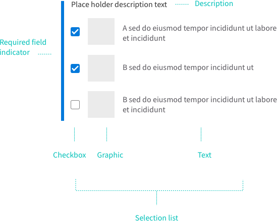

SelectionList
SelectionList is a vertical collection of items from which a user can choose one or more items.
Demos
import React from 'react';
import { GridCol, GridRow, Heading, SelectionList, SelectionListItem } from '@athena/forge';
export default function SelectionListSimple () {
return (
<GridRow stackUntilMedium className="fe_u_padding--large fe_u_padding--bottom-none">
<GridCol className="fe_u_margin--bottom-medium">
<Heading variant="subsection" text="List without Dividers" />
<SelectionList description="Are you experiencing any of these symptoms?">
<SelectionListItem uniqueKey="bloating">Bloating</SelectionListItem>
<SelectionListItem uniqueKey="cough">Cough</SelectionListItem>
<SelectionListItem uniqueKey="dizziness">Dizziness</SelectionListItem>
<SelectionListItem uniqueKey="fever">Fever</SelectionListItem>
<SelectionListItem uniqueKey="headache">Headache</SelectionListItem>
<SelectionListItem uniqueKey="nausea">Nausea</SelectionListItem>
</SelectionList>
</GridCol>
<GridCol>
<Heading variant="subsection" text="List with Dividers" />
<SelectionList description="Which physical activities do you participate in?" dividers={true}>
<SelectionListItem uniqueKey="running">Running</SelectionListItem>
<SelectionListItem uniqueKey="cycling">Cycling</SelectionListItem>
<SelectionListItem uniqueKey="soccer">Soccer</SelectionListItem>
<SelectionListItem uniqueKey="baseball">Baseball</SelectionListItem>
<SelectionListItem uniqueKey="football">Football</SelectionListItem>
<SelectionListItem uniqueKey="other">Other</SelectionListItem>
</SelectionList>
</GridCol>
</GridRow>
);
}
<div class="fe_l_grid-row fe_l_grid-row--stack-until-medium fe_u_padding--large fe_u_padding--bottom-none">
<div class="fe_l_grid-row__col fe_u_margin--bottom-medium">
<h1 class="fe_c_heading fe_c_heading--subsection">List without Dividers</h1>
<div class="fe_c_selection-list fe_c_selection-list--padded">
<div class="fe_c_selection-list__description">Are you experiencing any of these symptoms?</div>
<ul class="fe_c_list fe_c_interactive-list fe_c_selection-list__list">
<li data-key="bloating" class="fe_c_list__item fe_c_interactive-list__item fe_c_selection-list__item"><span id="fe-checkbox-gen-454" class="fe_c_checkbox fe_c_selection-list__checkbox"><input type="checkbox" value="bloating" readonly="" class="fe_c_checkbox__input" id="description-fe-checkbox-gen-454" aria-labelledby="description-label-fe-checkbox-gen-454" /><label for="description-fe-checkbox-gen-454" id="description-label-fe-checkbox-gen-454" class="fe_c_label fe_c_checkbox__description">Bloating</label></span></li>
<li data-key="cough" class="fe_c_list__item fe_c_interactive-list__item fe_c_selection-list__item"><span id="fe-checkbox-gen-455" class="fe_c_checkbox fe_c_selection-list__checkbox"><input type="checkbox" value="cough" readonly="" class="fe_c_checkbox__input" id="description-fe-checkbox-gen-455" aria-labelledby="description-label-fe-checkbox-gen-455" /><label for="description-fe-checkbox-gen-455" id="description-label-fe-checkbox-gen-455" class="fe_c_label fe_c_checkbox__description">Cough</label></span></li>
<li data-key="dizziness" class="fe_c_list__item fe_c_interactive-list__item fe_c_selection-list__item"><span id="fe-checkbox-gen-456" class="fe_c_checkbox fe_c_selection-list__checkbox"><input type="checkbox" value="dizziness" readonly="" class="fe_c_checkbox__input" id="description-fe-checkbox-gen-456" aria-labelledby="description-label-fe-checkbox-gen-456" /><label for="description-fe-checkbox-gen-456" id="description-label-fe-checkbox-gen-456" class="fe_c_label fe_c_checkbox__description">Dizziness</label></span></li>
<li data-key="fever" class="fe_c_list__item fe_c_interactive-list__item fe_c_selection-list__item"><span id="fe-checkbox-gen-457" class="fe_c_checkbox fe_c_selection-list__checkbox"><input type="checkbox" value="fever" readonly="" class="fe_c_checkbox__input" id="description-fe-checkbox-gen-457" aria-labelledby="description-label-fe-checkbox-gen-457" /><label for="description-fe-checkbox-gen-457" id="description-label-fe-checkbox-gen-457" class="fe_c_label fe_c_checkbox__description">Fever</label></span></li>
<li data-key="headache" class="fe_c_list__item fe_c_interactive-list__item fe_c_selection-list__item"><span id="fe-checkbox-gen-458" class="fe_c_checkbox fe_c_selection-list__checkbox"><input type="checkbox" value="headache" readonly="" class="fe_c_checkbox__input" id="description-fe-checkbox-gen-458" aria-labelledby="description-label-fe-checkbox-gen-458" /><label for="description-fe-checkbox-gen-458" id="description-label-fe-checkbox-gen-458" class="fe_c_label fe_c_checkbox__description">Headache</label></span></li>
<li data-key="nausea" class="fe_c_list__item fe_c_interactive-list__item fe_c_selection-list__item"><span id="fe-checkbox-gen-459" class="fe_c_checkbox fe_c_selection-list__checkbox"><input type="checkbox" value="nausea" readonly="" class="fe_c_checkbox__input" id="description-fe-checkbox-gen-459" aria-labelledby="description-label-fe-checkbox-gen-459" /><label for="description-fe-checkbox-gen-459" id="description-label-fe-checkbox-gen-459" class="fe_c_label fe_c_checkbox__description">Nausea</label></span></li>
</ul>
</div>
</div>
<div class="fe_l_grid-row__col">
<h1 class="fe_c_heading fe_c_heading--subsection">List with Dividers</h1>
<div class="fe_c_selection-list fe_c_selection-list--padded">
<div class="fe_c_selection-list__description">Which physical activities do you participate in?</div>
<ul class="fe_c_list fe_c_list--dividers fe_c_interactive-list fe_c_selection-list__list">
<li data-key="running" class="fe_c_list__item fe_c_interactive-list__item fe_c_selection-list__item"><span id="fe-checkbox-gen-460" class="fe_c_checkbox fe_c_selection-list__checkbox"><input type="checkbox" value="running" readonly="" class="fe_c_checkbox__input" id="description-fe-checkbox-gen-460" aria-labelledby="description-label-fe-checkbox-gen-460" /><label for="description-fe-checkbox-gen-460" id="description-label-fe-checkbox-gen-460" class="fe_c_label fe_c_checkbox__description">Running</label></span></li>
<li data-key="cycling" class="fe_c_list__item fe_c_interactive-list__item fe_c_selection-list__item"><span id="fe-checkbox-gen-461" class="fe_c_checkbox fe_c_selection-list__checkbox"><input type="checkbox" value="cycling" readonly="" class="fe_c_checkbox__input" id="description-fe-checkbox-gen-461" aria-labelledby="description-label-fe-checkbox-gen-461" /><label for="description-fe-checkbox-gen-461" id="description-label-fe-checkbox-gen-461" class="fe_c_label fe_c_checkbox__description">Cycling</label></span></li>
<li data-key="soccer" class="fe_c_list__item fe_c_interactive-list__item fe_c_selection-list__item"><span id="fe-checkbox-gen-462" class="fe_c_checkbox fe_c_selection-list__checkbox"><input type="checkbox" value="soccer" readonly="" class="fe_c_checkbox__input" id="description-fe-checkbox-gen-462" aria-labelledby="description-label-fe-checkbox-gen-462" /><label for="description-fe-checkbox-gen-462" id="description-label-fe-checkbox-gen-462" class="fe_c_label fe_c_checkbox__description">Soccer</label></span></li>
<li data-key="baseball" class="fe_c_list__item fe_c_interactive-list__item fe_c_selection-list__item"><span id="fe-checkbox-gen-463" class="fe_c_checkbox fe_c_selection-list__checkbox"><input type="checkbox" value="baseball" readonly="" class="fe_c_checkbox__input" id="description-fe-checkbox-gen-463" aria-labelledby="description-label-fe-checkbox-gen-463" /><label for="description-fe-checkbox-gen-463" id="description-label-fe-checkbox-gen-463" class="fe_c_label fe_c_checkbox__description">Baseball</label></span></li>
<li data-key="football" class="fe_c_list__item fe_c_interactive-list__item fe_c_selection-list__item"><span id="fe-checkbox-gen-464" class="fe_c_checkbox fe_c_selection-list__checkbox"><input type="checkbox" value="football" readonly="" class="fe_c_checkbox__input" id="description-fe-checkbox-gen-464" aria-labelledby="description-label-fe-checkbox-gen-464" /><label for="description-fe-checkbox-gen-464" id="description-label-fe-checkbox-gen-464" class="fe_c_label fe_c_checkbox__description">Football</label></span></li>
<li data-key="other" class="fe_c_list__item fe_c_interactive-list__item fe_c_selection-list__item"><span id="fe-checkbox-gen-465" class="fe_c_checkbox fe_c_selection-list__checkbox"><input type="checkbox" value="other" readonly="" class="fe_c_checkbox__input" id="description-fe-checkbox-gen-465" aria-labelledby="description-label-fe-checkbox-gen-465" /><label for="description-fe-checkbox-gen-465" id="description-label-fe-checkbox-gen-465" class="fe_c_label fe_c_checkbox__description">Other</label></span></li>
</ul>
</div>
</div>
</div>import React from 'react';
import { GridCol, GridRow, Heading, SelectionList, SelectionListItem } from '@athena/forge';
const people1 = [
{ name: 'Carl Tsui', image: '../../assets/images/people/Carl.jpg' },
{ name: 'Rachel Sheketoff', image: '../../assets/images/people/Rachel.jpg' },
{ name: 'Shaohui Qiu', image: '../../assets/images/people/Shao.jpg' },
{ name: 'Kevin O\'Flaherty', image: '../../assets/images/people/Kevin.jpg' },
];
const people2 = [
{ name: 'Zach Kuzmic', image: '../../assets/images/people/Zach.jpg' },
{ name: 'Sean Hilts', image: '../../assets/images/people/Sean.jpg' },
{ name: 'Adam Darlow', image: '../../assets/images/people/Adam.jpg' },
{ name: 'Andrew Berg', image: '../../assets/images/people/Andrew.jpg' },
];
export default function SelectionListComplex () {
return (
<GridRow stackUntilMedium className="fe_u_padding--large fe_u_padding--bottom-none">
<GridCol className="fe_u_margin--bottom-medium">
<Heading variant="subsection" text="List without Dividers" />
<SelectionList>
{ people1.map(({ name, image }) => (
<SelectionListItem
className="fe_u_flex-container fe_u_flex-align-items--center"
key={name}
uniqueKey={name}
>
<img src={image}/>
<span className="fe_u_margin--left-medium">{name}</span>
</SelectionListItem>
))}
</SelectionList>
</GridCol>
<GridCol>
<Heading variant="subsection" text="List with Dividers" />
<SelectionList className="people" dividers={true}>
{ people2.map(({ name, image }) => (
<SelectionListItem
className="fe_u_flex-container fe_u_flex-align-items--center"
key={name}
uniqueKey={name}
>
<img src={image}/>
<span className="fe_u_margin--left-medium">{name}</span>
</SelectionListItem>
))}
</SelectionList>
</GridCol>
</GridRow>
);
}
<div class="fe_l_grid-row fe_l_grid-row--stack-until-medium fe_u_padding--large fe_u_padding--bottom-none">
<div class="fe_l_grid-row__col fe_u_margin--bottom-medium">
<h1 class="fe_c_heading fe_c_heading--subsection">List without Dividers</h1>
<div class="fe_c_selection-list fe_c_selection-list--padded">
<ul class="fe_c_list fe_c_interactive-list fe_c_selection-list__list">
<li data-key="Carl Tsui" class="fe_c_list__item fe_c_interactive-list__item fe_c_selection-list__item fe_u_flex-container fe_u_flex-align-items--center"><span id="fe-checkbox-gen-466" class="fe_c_checkbox fe_c_selection-list__checkbox"><input type="checkbox" value="Carl Tsui" readonly="" class="fe_c_checkbox__input" id="description-fe-checkbox-gen-466" aria-labelledby="description-label-fe-checkbox-gen-466" /><label for="description-fe-checkbox-gen-466" id="description-label-fe-checkbox-gen-466" class="fe_c_label fe_c_checkbox__description"></label></span><img src="../../assets/images/people/Carl.jpg" /><span class="fe_u_margin--left-medium">Carl Tsui</span></li>
<li data-key="Rachel Sheketoff" class="fe_c_list__item fe_c_interactive-list__item fe_c_selection-list__item fe_u_flex-container fe_u_flex-align-items--center"><span id="fe-checkbox-gen-467" class="fe_c_checkbox fe_c_selection-list__checkbox"><input type="checkbox" value="Rachel Sheketoff" readonly="" class="fe_c_checkbox__input" id="description-fe-checkbox-gen-467" aria-labelledby="description-label-fe-checkbox-gen-467" /><label for="description-fe-checkbox-gen-467" id="description-label-fe-checkbox-gen-467" class="fe_c_label fe_c_checkbox__description"></label></span><img src="../../assets/images/people/Rachel.jpg" /><span class="fe_u_margin--left-medium">Rachel Sheketoff</span></li>
<li data-key="Shaohui Qiu" class="fe_c_list__item fe_c_interactive-list__item fe_c_selection-list__item fe_u_flex-container fe_u_flex-align-items--center"><span id="fe-checkbox-gen-468" class="fe_c_checkbox fe_c_selection-list__checkbox"><input type="checkbox" value="Shaohui Qiu" readonly="" class="fe_c_checkbox__input" id="description-fe-checkbox-gen-468" aria-labelledby="description-label-fe-checkbox-gen-468" /><label for="description-fe-checkbox-gen-468" id="description-label-fe-checkbox-gen-468" class="fe_c_label fe_c_checkbox__description"></label></span><img src="../../assets/images/people/Shao.jpg" /><span class="fe_u_margin--left-medium">Shaohui Qiu</span></li>
<li data-key="Kevin O'Flaherty" class="fe_c_list__item fe_c_interactive-list__item fe_c_selection-list__item fe_u_flex-container fe_u_flex-align-items--center"><span id="fe-checkbox-gen-469" class="fe_c_checkbox fe_c_selection-list__checkbox"><input type="checkbox" value="Kevin O'Flaherty" readonly="" class="fe_c_checkbox__input" id="description-fe-checkbox-gen-469" aria-labelledby="description-label-fe-checkbox-gen-469" /><label for="description-fe-checkbox-gen-469" id="description-label-fe-checkbox-gen-469" class="fe_c_label fe_c_checkbox__description"></label></span><img src="../../assets/images/people/Kevin.jpg" /><span class="fe_u_margin--left-medium">Kevin O'Flaherty</span></li>
</ul>
</div>
</div>
<div class="fe_l_grid-row__col">
<h1 class="fe_c_heading fe_c_heading--subsection">List with Dividers</h1>
<div class="fe_c_selection-list fe_c_selection-list--padded people">
<ul class="fe_c_list fe_c_list--dividers fe_c_interactive-list fe_c_selection-list__list">
<li data-key="Zach Kuzmic" class="fe_c_list__item fe_c_interactive-list__item fe_c_selection-list__item fe_u_flex-container fe_u_flex-align-items--center"><span id="fe-checkbox-gen-470" class="fe_c_checkbox fe_c_selection-list__checkbox"><input type="checkbox" value="Zach Kuzmic" readonly="" class="fe_c_checkbox__input" id="description-fe-checkbox-gen-470" aria-labelledby="description-label-fe-checkbox-gen-470" /><label for="description-fe-checkbox-gen-470" id="description-label-fe-checkbox-gen-470" class="fe_c_label fe_c_checkbox__description"></label></span><img src="../../assets/images/people/Zach.jpg" /><span class="fe_u_margin--left-medium">Zach Kuzmic</span></li>
<li data-key="Sean Hilts" class="fe_c_list__item fe_c_interactive-list__item fe_c_selection-list__item fe_u_flex-container fe_u_flex-align-items--center"><span id="fe-checkbox-gen-471" class="fe_c_checkbox fe_c_selection-list__checkbox"><input type="checkbox" value="Sean Hilts" readonly="" class="fe_c_checkbox__input" id="description-fe-checkbox-gen-471" aria-labelledby="description-label-fe-checkbox-gen-471" /><label for="description-fe-checkbox-gen-471" id="description-label-fe-checkbox-gen-471" class="fe_c_label fe_c_checkbox__description"></label></span><img src="../../assets/images/people/Sean.jpg" /><span class="fe_u_margin--left-medium">Sean Hilts</span></li>
<li data-key="Adam Darlow" class="fe_c_list__item fe_c_interactive-list__item fe_c_selection-list__item fe_u_flex-container fe_u_flex-align-items--center"><span id="fe-checkbox-gen-472" class="fe_c_checkbox fe_c_selection-list__checkbox"><input type="checkbox" value="Adam Darlow" readonly="" class="fe_c_checkbox__input" id="description-fe-checkbox-gen-472" aria-labelledby="description-label-fe-checkbox-gen-472" /><label for="description-fe-checkbox-gen-472" id="description-label-fe-checkbox-gen-472" class="fe_c_label fe_c_checkbox__description"></label></span><img src="../../assets/images/people/Adam.jpg" /><span class="fe_u_margin--left-medium">Adam Darlow</span></li>
<li data-key="Andrew Berg" class="fe_c_list__item fe_c_interactive-list__item fe_c_selection-list__item fe_u_flex-container fe_u_flex-align-items--center"><span id="fe-checkbox-gen-473" class="fe_c_checkbox fe_c_selection-list__checkbox"><input type="checkbox" value="Andrew Berg" readonly="" class="fe_c_checkbox__input" id="description-fe-checkbox-gen-473" aria-labelledby="description-label-fe-checkbox-gen-473" /><label for="description-fe-checkbox-gen-473" id="description-label-fe-checkbox-gen-473" class="fe_c_label fe_c_checkbox__description"></label></span><img src="../../assets/images/people/Andrew.jpg" /><span class="fe_u_margin--left-medium">Andrew Berg</span></li>
</ul>
</div>
</div>
</div>import React, { Component } from 'react';
import { createStore, combineReducers } from 'redux';
import { reducer as formReducer } from 'redux-form';
import { Provider } from 'react-redux';
import { ReduxForm, ReduxFormField, SelectionList } from '@athena/forge';
const store = createStore(
combineReducers({
form: formReducer,
})
);
class SelectionListReduxForm extends Component {
constructor(props) {
super(props);
this.state = { formValues: '' };
this.handleSubmit = this.handleSubmit.bind(this);
}
handleSubmit(values){
this.setState({ formValues: JSON.stringify(values, null, 2) });
}
render(){
return (
<Provider store={store}>
<div className="fe_u_padding--large">
<ReduxForm form="selection-list-form-demo" onSubmit={this.handleSubmit}>
<ReduxFormField
id="foodAllergies"
labelText="Are you allergic to any of the following foods?"
inputAs={SelectionList}
required
options={[
{
text: 'Fish',
value: 'fish',
},
{
text: 'Milk',
value: 'milk',
},
{
text: 'Nuts',
value: 'nuts',
},
{
text: 'Soybeans',
value: 'soybeans',
},
{
text: 'Wheat',
value: 'wheat',
},
]}
/>
</ReduxForm>
<div style={{
boxSizing: 'border-box',
fontFamily: 'monospace',
color: 'dimgray',
border: '1px solid gainsboro',
background: 'whitesmoke',
padding: '1rem',
borderRadius: '3px',
width: '300px',
minHeight: '62px',
}}>
<strong>FORM DATA:</strong><br />
<code><pre>{this.state.formValues}</pre></code>
</div>
</div>
</Provider>
);
}
}
export default SelectionListReduxForm;
<div class="fe_u_padding--large">
<form name="selection-list-form-demo" novalidate="">
<div class="fe_c_form-field">
<div class="fe_l_grid-row fe_l_grid-row--nested">
<div class="fe_l_grid-row__col fe_l_grid-row__col--small-12 fe_l_grid-row__col--medium-3 fe_c_form-field__label"><label for="foodAllergies" id="foodAllergies-label" class="fe_c_label">Are you allergic to any of the following foods?<span class="fe_c_label__required"> - Required</span></label></div>
<div class="fe_l_grid-row__col fe_l_grid-row__col--small-12 fe_l_grid-row__col--medium-9 fe_c_form-field__right">
<div class="fe_c_form-field__input-slot">
<div class="fe_c_selection-list fe_c_selection-list--padded fe_is-required fe_c_form-field__input">
<ul class="fe_c_list fe_c_interactive-list fe_c_selection-list__list" options="[object Object],[object Object],[object Object],[object Object],[object Object]" name="foodAllergies" id="foodAllergies" aria-labelledby="foodAllergies-label">
<li data-key="fish" class="fe_c_list__item fe_c_interactive-list__item fe_c_selection-list__item"><span id="fe-checkbox-gen-474" class="fe_c_checkbox fe_c_selection-list__checkbox"><input type="checkbox" value="fish" readonly="" class="fe_c_checkbox__input" id="description-fe-checkbox-gen-474" aria-labelledby="description-label-fe-checkbox-gen-474" /><label for="description-fe-checkbox-gen-474" id="description-label-fe-checkbox-gen-474" class="fe_c_label fe_c_checkbox__description">Fish</label></span></li>
<li data-key="milk" class="fe_c_list__item fe_c_interactive-list__item fe_c_selection-list__item"><span id="fe-checkbox-gen-475" class="fe_c_checkbox fe_c_selection-list__checkbox"><input type="checkbox" value="milk" readonly="" class="fe_c_checkbox__input" id="description-fe-checkbox-gen-475" aria-labelledby="description-label-fe-checkbox-gen-475" /><label for="description-fe-checkbox-gen-475" id="description-label-fe-checkbox-gen-475" class="fe_c_label fe_c_checkbox__description">Milk</label></span></li>
<li data-key="nuts" class="fe_c_list__item fe_c_interactive-list__item fe_c_selection-list__item"><span id="fe-checkbox-gen-476" class="fe_c_checkbox fe_c_selection-list__checkbox"><input type="checkbox" value="nuts" readonly="" class="fe_c_checkbox__input" id="description-fe-checkbox-gen-476" aria-labelledby="description-label-fe-checkbox-gen-476" /><label for="description-fe-checkbox-gen-476" id="description-label-fe-checkbox-gen-476" class="fe_c_label fe_c_checkbox__description">Nuts</label></span></li>
<li data-key="soybeans" class="fe_c_list__item fe_c_interactive-list__item fe_c_selection-list__item"><span id="fe-checkbox-gen-477" class="fe_c_checkbox fe_c_selection-list__checkbox"><input type="checkbox" value="soybeans" readonly="" class="fe_c_checkbox__input" id="description-fe-checkbox-gen-477" aria-labelledby="description-label-fe-checkbox-gen-477" /><label for="description-fe-checkbox-gen-477" id="description-label-fe-checkbox-gen-477" class="fe_c_label fe_c_checkbox__description">Soybeans</label></span></li>
<li data-key="wheat" class="fe_c_list__item fe_c_interactive-list__item fe_c_selection-list__item"><span id="fe-checkbox-gen-478" class="fe_c_checkbox fe_c_selection-list__checkbox"><input type="checkbox" value="wheat" readonly="" class="fe_c_checkbox__input" id="description-fe-checkbox-gen-478" aria-labelledby="description-label-fe-checkbox-gen-478" /><label for="description-fe-checkbox-gen-478" id="description-label-fe-checkbox-gen-478" class="fe_c_label fe_c_checkbox__description">Wheat</label></span></li>
</ul>
</div>
<div class="fe_c_form-field__message"></div>
</div>
<div class="fe_c_form-field__status"></div>
</div>
</div>
</div>
<div class="fe_c_form-field">
<div class="fe_l_grid-row fe_l_grid-row--nested">
<div class="fe_l_grid-row__col fe_l_grid-row__col--small-12 fe_l_grid-row__col--medium-3 fe_c_form-field__label"></div>
<div class="fe_l_grid-row__col fe_l_grid-row__col--small-12 fe_l_grid-row__col--medium-9 fe_c_form-field__right">
<div class="fe_c_form-field__input-slot"><button class="fe_c_button fe_c_button--primary" aria-disabled="false" type="submit">Submit</button>
<div class="fe_c_form-field__message"></div>
</div>
<div class="fe_c_form-field__status"></div>
</div>
</div>
</div>
</form>
<div style="box-sizing:border-box;font-family:monospace;color:dimgray;border:1px solid gainsboro;background:whitesmoke;padding:1rem;border-radius:3px;width:300px;min-height:62px"><strong>FORM DATA:</strong><br /><code>
<pre></pre></code></div>
</div>Usage
SelectionList allows users to choose single or multiple items from a predefined list. When used within a form, the SelectionList is treated as a single field, meaning the entire list shares a single label and error message.
Design
Components for the SelectionList can include:
- Description - (optional) A question or statement placed above the selection list items.
- Required field indicator - When a
SelectionListis required in a form, a blue bar is placed to the left of theSelectionList. The bar extends to the top of the description if there is one, or of the top item otherwise. The blue bar changes to yellow in the error situation when none of the items are checked. - Selection list item - Selection list items can be composed of several different elements. The user should be able to interact with the entire list item in order to select / deselect it. Therefore placing other clickable components within the list item that lead to actions beyond selection / deselection is not recommended.

The above is an example of custom list items with text and images. The checkbox is a required element of the SelectionListItem to ensure consistent representation of items that are selected.
When creating a custom SelectionListItem, make sure to consider whether the SelectionList itself might be resizable and therefore require its SelectionListItem children to have a flexible layout.
Find more guidance on the Form Design Foundations page.
Item Alignment
By default, a SelectionListItem that contains only text labels for the checkboxes is aligned with the first line of text. Any text flowing across multiple lines will be aligned similarly to text alignment in the Checkbox component.
In cases where the SelectionListItem is a composition of multiple lines of text, images, or icons, the alignment of the items to the right of the checkbox are determined by the needs of the data and use case.
Implementation
SelectionList can be used on its own or as an input in FormField or ReduxFormField.
It takes either a list of SelectionListItem components as its children or an options array prop like Select and RadioGroup. Using options is less verbose, but only supports text. SelectionListItem can take any content as its children.
Value structure
SelectionList takes as its value an object mapping the uniqueKey of its list items to boolean values. If the options prop was used to generate the list items, the value property for each item in options is used to create that item's uniqueKey. If there are three items A, B, and C and you want only B checked, set value (or defaultValue if you are using SelectionList as an uncontrolled component) to
{
'A': false,
'B': true,
'C': false,
}Similarly, SelectionList calls onChange with an event object where event.target.value is a map of keys to boolean values like the one above.
API Tables
Import SelectionList and SelectionListItem Only
Importing individual components can reduce bundle size. Learn more
import SelectionList from '@athena/forge/lib/selection-list';
import SelectionListItem from '@athena/forge/lib/selection-list-item';SelectionList Props
| Prop | Type | Default | Description |
|---|---|---|---|
children |
custom | SelectionList items can be set through the options prop or through children, not both | |
className |
string | Adds a class to the root element of the component | |
defaultValue |
objectOf
|
Determines the initial set of selected items, but allows them to be updated internally (uncontrolled). The object keys correspond to SelectedListItem.uniqueKey or option value. | |
description |
string | Describes the selection options. Usually a question/statement that the options are responses to | |
disabled |
bool | Impacts the styling of the checkboxes in addition to preventing selection | |
error |
string | Highlights the input when defined (specific string doesn't matter) | |
inputWidth |
string | Styling to be applied to width css property. Specifying this will override all other behavior that affects input width. | |
name |
string | name attribute of the root element |
|
onBlur |
func | Called when any of the items lose focus.
Gets a simulated event object. The value (map of keys to true/false) is in event.target.value. |
|
onChange |
func | Called when the value changes.
Gets a simulated event object. The value (map of keys to true/false) is in event.target.value. |
|
onClickItem |
func | A callback handling item click events. You would generally use onChange instead.
Arguments passed to the callback are the synthetic event and the unique key
of the associated list item. |
|
onUpdate Deprecated |
func | Deprecated in favor of onChange. |
|
options |
arrayOf - oneOfType:
|
Provided for consistency with Select and RadioGroup, but only string values are supported.
An option's value is equivalent to SelectionListItem.uniqueKey.
If an option is supplied as a string, it's both the value and the text of the option. |
|
padded |
bool | true | Adds default padding that can be removed when the parent already provides a gutter |
required |
bool | Not used. All validation is handled by parents. | |
value |
union
|
Determines the set of selected items, and prevents them from getting updated internally (controlled). The object keys correspond to SelectedListItem.uniqueKey or option value. Supports empty string for easier integration with ReduxFormField. | |
...rest |
Passthrough props to the InteractiveListTemplate sub-component |
SelectionListItem Props
| Prop | Type | Default | Description |
|---|---|---|---|
uniqueKey (required) |
string | A unique identifier for this item in its list. Equivalent to a checkbox element's value attribute. | |
className |
string | Adds a class to the root element of the component | |
disabled |
bool | false | Impacts the styling of the checkbox in addition to preventing selection |
error |
string | Highlights the checkbox when defined (specific string doesn't matter) | |
selected |
bool | false | Determines whether the item is selected. |
...rest |
Passthrough props to the InteractiveListItem implemented by the SelectionListItem |
HTML API
SelectionList uses the following classes in addition to those from List.
| Class | Applies to | Description |
|---|---|---|
fe_c_selection-list |
SelectionList root | Base class required for SelectionList |
fe_c_selection-list__checkbox |
Checkbox root | Class required for the SelectionList variation of Checkbox |
fe_c_selection-list__description |
Description root | Base class required for the description container in SelectionList |
fe_c_selection-list__item |
SelectionListItem root | Base class required for SelectionListItem |